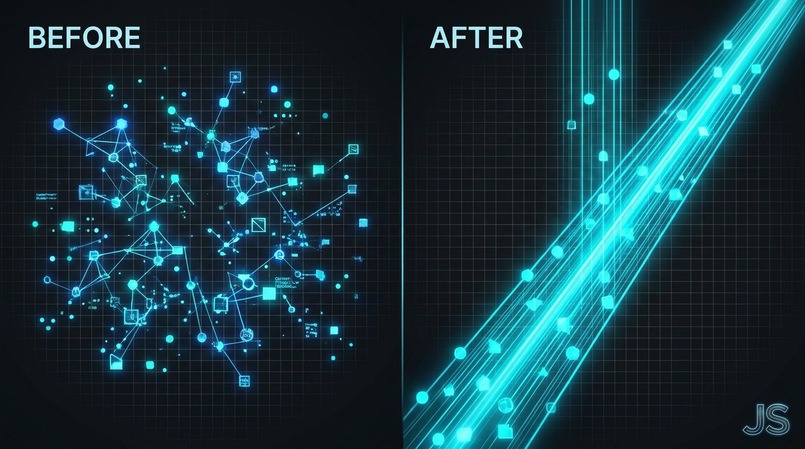

The Creative Shift June 30, 2026
The Signal-to-Noise Framework
Why Most Brands Are Generating More Confusion Than Clarity
Most brands are producing more content than ever and building less trust than ever.
That is not a coincidence.
VOLUME IS NOT THE PROBLEM
The assumption behind most content strategies is that more output equals more reach equals more growth.
That math worked when attention was easier to capture.
It does not work now.
AI has made content infinitely scalable. Which means the internet is now saturated with competent, well-structured, meaningless output. Audiences feel it. They cannot always name it, but they feel it.
When everything sounds like everything else, nothing registers.
THE REAL PROBLEM IS SIGNAL
Signal is the thing your audience actually retains after encountering your brand.
Not your logo. Not your tagline. The thing they remember. The thing they repeat to someone else. The thing that shifts how they see a problem.
Most brands have no idea what their signal is. They have messaging. They have content pillars. They have a style guide.
None of that is signal.
Signal is what happens when your brand consistently says something true, specific, and differentiated, over and over, until it becomes ownable.
This is where behavioral science matters. Repetition builds familiarity. Familiarity builds trust. But only if what is being repeated is actually worth retaining.
THE SIGNAL-TO-NOISE FRAMEWORK
This is the framework I use to audit brand content before rebuilding strategy.
Step one: Pull your last 30 pieces of content. Read them without context. Ask: what is the one idea this brand is known for? If you cannot answer that clearly, you have a noise problem.
Step two: Identify the claim only you can make. Not the category claim. Not the aspiration. The specific, earned, defensible belief your brand holds that no competitor can say with the same credibility.
Step three: Map every piece of content against that claim. Ask: does this reinforce the signal or dilute it? Content that dilutes the signal is noise. It may be well-crafted noise. It is still noise.
Step four: Cut the noise. Redistribute the effort. Build fewer things that say the real thing better.
WHAT THIS LOOKS LIKE IN PRACTICE
I worked with a brand that was posting five times a week, running ads, publishing a newsletter, and growing a podcast. Reach was growing. Engagement was declining. Conversion was flat.
The audit revealed that their content covered seventeen different themes. None of those themes was ownable. None reinforced a single belief the brand held.
We cut output by sixty percent. We rebuilt everything around one signal. Within ninety days, engagement doubled and inbound inquiry tripled.
The market does not reward volume. It rewards clarity.

THE NOISE IN AI-GENERATED CONTENT
Here is the specific risk with AI content at scale: AI is exceptionally good at producing coherent, grammatically sound, tonally appropriate noise.
It will fill your content calendar. It will match your voice guidelines. It will even optimize for engagement patterns.
But if the signal was not defined before the machine started producing, the machine will produce nothing but sophisticated noise.
This is the failure most brands will not identify until the damage is done.
Define the signal first. Then let the systems amplify it.
ONE FOR THE ROAD
Clarity is not a creative choice. It is a strategic discipline. The brands that win do not say more. They say one true thing until the market believes it.
If you are building a content strategy, an AI system, or a brand architecture and you want the signal defined before the machine runs, reach out. That is exactly the work I do.
Want this kind of thinking on your brand?
The Creative Shift is the thinking behind the client work. Book a call, or read the original on LinkedIn.